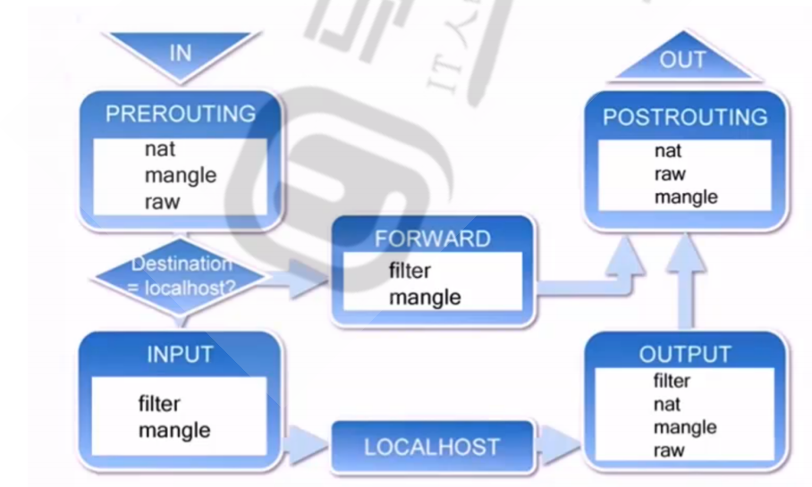
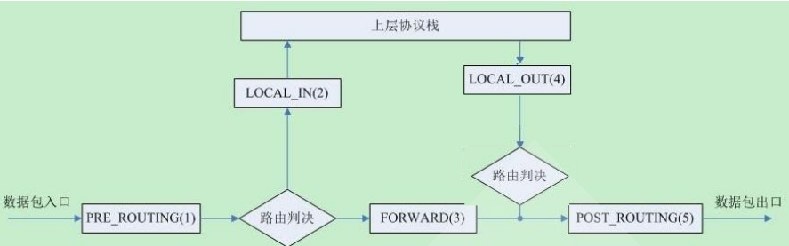

[TOC]
一、SUDO,PAM配置规范说明 解析：
1、sudo配置规范说明
①sudo能够授权指定用户在指定主机上运行某些命令
②root用户授权给一些普通用户特殊权限，需要在/etc/sudoers文件中按照规则进行授权，如果面对多种权限多用户情况下需要具体分类，可以在/etc/sudoers.d/文件夹下单独按照规则编写多个文件
③/etc/sudoers的权限为440
④进入/etc/sudoers进行编辑
sudo授权规则格式：
用户 登陆主机=(代表用户) 命令10.0 .0.128 ,10.0 .0.129 = /usr/ bin/ls,/ sbin/ifconfig
sudoers的别名
1 2 3 4 5 6 7 8 9 10 11 12 13 14 15 User和runas: alias |runas_alias (/netmask) alias command :command name
别名格式：
1 [A-Z] ([A-Z] [0-9] _)* #由字母、数字、下划线组成
2、PAM配置规范说明
①PAM：Pluggable Authentication Modules，插件式的验证模块，Sun公司于1995 年开发的一种与认证相关的通用框架机制。PAM 只关注如何为服务验证用户的 API，通过提供一些动态链接库和一套统一的API，将系统提供的服务和该服务的认证方式分开，使得系统管理员可以灵活地根据需要给不同的服务配置不同的认证方式而无需更改服务程序一种认证框架，自身不做认证
②PAM工作原理：
PAM认证一般遵循这样的顺序：Service(服务)→PAM(配置文件)→pam_*.so
PAM认证首先要确定那一项服务，然后加载相应的PAM的配置文件(位于/etc/pam.d下)，最后调用认证文件(位于/lib64/security下)进行安全认证
③PAM模块的配置文件存放在/etc/security/中；PAM 模块文件存放在/lib/security或者 /lib64/security/ 中；各个软件的 PAM 配置文件存放在 /etc/pam.d/ 中
④PAM配置文件格式：工作类别 控制模式 模块路径 模块参数
二、chrony搭建私有ntp服务 解析：
1 2 3 4 5 6 7 8 9 10 11 12 13 14 15 16 17 18 19 20 21 22 23 24 25 26 27 28 29 30 31 32 33 34 35 36 37 38 39 40 41 42 43 44 45 46 47 [root@Rocky8 ~]#yum -y install chrony #安装chrony @Rocky8 ~]#vim /etc/chrony.conf #pool 2.rhel.pool.ntp.org iburst #加#注释此行，它是一个国外提供校时的虚拟集群，反应误差比国内的大，最好更换为国内NTP服务器网址 #添加阿里云ntp网址 #添加腾讯ntp网址 #保存退出 @Rocky8 ~]#systemctl restart chronyd #启动服务 @Rocky8 ~]#ss -ntlu #323端口已启动（127.0.0.1表示只有本机时间同步） Send -Q Local Address:Port Peer Address:Port Process udp UNCONN 0 0 127.0 .0 .1 :323 0.0 .0 .0 :* @Rocky8 ~]#chronyc sources -v #查看是否已同步 #此时本机已经可以和设置的网址网络时间同步了 #下一步将此机设置为局域网内的服务器，将局域网内的其他机器时间向此机器同步 @Rocky8 ~]#vim /etc/chrony.conf # Allow NTP client access from local network. #allow 192.168.0.0/16 0.0 .0 .0 /0 #在上面两条的下方添加此网段，表示此网段的所有机器都可以和我同步时间（0.0.0.0/0表示所有网段） #保存退出 @Rocky8 ~]#systemctl restart chronyd #启动服务 @Rocky8 ~]#ss -ntlu #123端口已启动（123是ntp协议同步的标准端口号，0.0.0.0表示所有网段都可以和我同步） Send -Q Local Address:Port Peer Address:Port Process udp UNCONN 0 0 0.0 .0 .0 :123 0.0 .0 .0 :* @Centos7 ~]#ntpdate 10.0.0.128 #使用另一台主机同步时间，显示成功 23 Sep 16 :04 :02 ntpdate[2291 ]: adjust time server 10.0 .0 .128 offset 0.027979 sec#下一步设置客户端配置（局域网内其他机器），以确保永久同步 @Centos7 ~]#yum -y install chrony #安装chrony @Centos7 ~]#vim /etc/chrony.conf 10.0 .0 .128 iburst #添加自己设置的ntp服务器 #server 0.centos.pool.ntp.org iburst #server 1.centos.pool.ntp.org iburst #server 2.centos.pool.ntp.org iburst #server 3.centos.pool.ntp.org iburst #将配置文件中的原4条设置注释掉 #保存退出 @Centos7 ~]#systemctl restart chronyd #重启服务 @Centos7 ~]#chronyc sources -v #确认是否同步，已同步 10.0 .0 .128 3 6 37 13 +19 ns[ +85 us] +/- 18 ms#当设置的服务器与网络断开时，仍为局域网内的其他客户端提供服务，需进行如下设置 @Rocky8 ~]#vim /etc/chrony.conf local stratum 10 #将#删除 #保存退出 @Rocky8 ~]#systemctl restart chronyd #重启服务 #设置开机启动 @Rocky8 ~]#systemctl enable --now chronyd @Centos7 ~]#systemctl enable --now chronyd
三、说明CDN原理 解析：
①用户向浏览器输入www.a.com这个域名，浏览器第一次发现本地没有dns缓存，则向网站的DNS服
务器请求
②网站的DNS域名解析器设置了CNAME，指向了www.a.tbcdn.com,请求指向了CDN网络中的智能
DNS负载均衡系统
③智能DNS负载均衡系统解析域名，把对用户响应速度最快的IP节点返回给用户；
④用户向该IP节点（CDN服务器）发出请求
⑤由于是第一次访问，CDN服务器会通过Cache内部专用DNS解析得到此域名的原web站点IP，向原
站点服务器发起请求，并在CDN服务器上缓存内容
⑥请求结果发给用户
四、搭建智能DNS，实现不同地域客户端解析到不同主机 解析：
1、安装软件
1 2 yum -y install bind bind-utils
2、配置两台主机
1 2 3 4 5 6 7 8 9 实现区域就近原则访问2.2.2.2 /24 （北京） 3.3.3.3 /24 （上海）10.0.0.0 /24 访问时地址为2.2.2.2 /24 ；当网段为192.168.10.0 /24 访问网址时为3.3.3.3 /24 10.0.0.216 192.168.10.216
3、 创建区域数据库文件
1 2 3 4 5 6 7 8 9 10 11 12 13 14 15 16 17 18 19 20 21 22 23 24 25 26 27 28 29 [root@Rocky8 named]1 DIN SOA master admin .magedu.org. (2019042214 ; serial1 D ; refresh1H ; retry1 W ; expire3H ) ; minimummaster master A 10.0 .0.8 3.3 .3.3 1 DIN SOA master admin .magedu.org. (2019042214 ; serial1 D ; refresh1H ; retry1 W ; expire3H ) ; minimummaster master A 10.0 .0.8 2.2 .2.2
4、实现区域配置文件
1 2 3 4 5 6 7 8 9 10 11 12 13 14 15 16 17 18 19 20 21 22 23 24 [root@Rocky8 etc]"." IN {"named.ca" ;"magedu.org" {"magedu.org.zone.shanghai" ;"." IN {"named.ca" ;"magedu.org" {"magedu.org.zone.beijing" ;
5、服务端配置文件实现 view
1 2 3 4 5 6 7 8 9 10 11 12 13 14 15 16 17 18 19 20 21 22 23 [root@Rocky8 etc]10.0 .0.0 /24 ;192.168 .10.0 /24 ;match -clients { beijingnet;};include "/etc/named.rfc1912.zones.beijing" ; match -clients { shanghainet;};include "/etc/named.rfc1912.zones.shanghai" ;include "/etc/named.rfc1912.zones" ;
五、解释DNS解析流程 解析：
1、工作原理流程图
2、查询请求的经过流程
Client –>hosts文件 –> Client DNS Service Local Cache –> DNS Server (recursion递
归) –> DNS Server Cache –>DNS iteration(迭代) –> 根–> 顶级域名DNS–>二级域名DNS…
3、解析流程
①客户端在浏览器中输入网址www.magedu.com查找时，首先会在客户端主机里面查找本地缓存及hosts文件是否有此网址对应IP，如果有即可正常登录（首次查询时没有相关记录）
②当本地缓存与hosts文件没有对应的IP地址时，客户端会向客户端所在地址的DNS服务器（即Local DNS）发出请求，如果Local DNS的本地缓存有对应的IP地址，就会将IP地址回复至客户端，如果没有对应缓存会向其他服务器发起请求
③首先向.根服务器发起请求，根服务器没有对应的IP地址，但缓存中有.com的地址，将.com的地址反馈给Local DNS，让它去咨询.com域名服务器
④收到.com的地址后，向.com域名服务器发起请求，.com域名服务器没有对应的IP地址，但缓存中有magedu.com的地址，将magedu.com的地址反馈给Local DNS，让它去咨询magedu.com域名服务器
⑤收到magedu.com的地址后，向magedu.com域名服务器发起请求，magedu.com域名服务器缓存中有www.magedu.com的IP地址，并将地址反馈给Local DNS
⑥Local DNS收到对应IP地址后，将IP地址反馈给客户端，并将此地址放到本地缓存里，以便下次使用
4、DNS查询类型
①递归查询：是指DNS服务器在收到用户发起的请求时，必须向用户返回一个准确的查询结果。如果DNS服务器本地没有存储与之对应的信息，则该服务器需要询问其他服务器，并将返回的查询结构提交给用户。
一般客户机和本地DNS服务器之间属于递归查询，即当客户机向DNS服务器发出请求后,若DNS服务器本身不能解析，则会向另外的DNS服务器发出查询请求，得到最终的肯定或否定的结果后转交给客户机。此查询的源和目标保持不变,为了查询结果只需要发起一次查询
递归算法:客户端向LocalDNS发起域名查询–>localDNS不知道域名对应的IP–>但它知道谁知道->他
代为帮客户端去查找–>最后再返回最终结果
②迭代查询：是指DNS服务器在收到用户发起的请求时，并不直接回复查询结果，而是告诉另一台DNS服务器的地址，用户再向这台DNS服务器提交请求，这样依次反复，直到返回查询结果。
一般情况下(有例外)本地的DNS服务器向其它DNS服务器的查询属于迭代查询,如：若对方不能返回权威的结果，则它会向下一个DNS服务器(参考前一个DNS服务器返回的结果)再次发起进行查询，直到返回查询的结果为止。此查询的源不变,但查询的目标不断变化,为查询结果一般需要发起多次查询
迭代算法︰客户端向LocalDNS发起域名查询–>localDNS不知道域名对应的IP–>但它知道谁知道并
推荐客户端应该找谁–>客户端自己去找它
③DNS缓存：是将解析数据存储在靠近发起请求的客户端的位置，也可以说DNS数据是可以缓存在任意
位置，最终目的是以此减少递归查询过程，可以更快的让用户获得请求结果。
六、iptables 5表5链解释 解析：
1、iptables由五个表table和五个链chain以及一些规则组成

2、5个链chain
组成：INPUT OUTPUT FORWARD PREROUTING POSTROUTING

3、5个表table
①组成：filter ：过滤规则表，根据预定义的规则过滤符合条件的数据包,默认表
nat ：network address translation 地址转换规则表
mangle ：修改数据标记位规则表
raw ：关闭启用的连接跟踪机制，加快封包穿越防火墙速度
security ：用于强制访问控制（MAC）网络规则，由Linux安全模块（如SELinux）实现
②优先级：security –>raw–>mangle–>nat–>filter
七、iptables/firewalld/nftable 实现主机防火墙。5000-6000端口仅192.168.0.0/24网段内的主机访问 解析：
1 2 [root@Rocky ~] #systemctl disable --now firewalld.service #启用iptables需要关闭firewalld[root@Rocky ~] #iptables -t filter -A INPUT -p tcp ! -s 192.168 .0.0 /24 --dport 5000 :6000 -j DROP
1 2 3 [root @Rocky ~]firewall-cmd --permanent --zone=vnc --add-rich-rule='rule family =ipv4 source address =192 .168 .0 .0 /24 port port =5000-6000 protocol =tcp accept '
1 2 3 4 5 [root@Rocky ~]#systemctl disable add table inet test_table #添加使用簇为inet 的test_table表add chain inet test_table test_filter_input_chain { type filter hook input priority 0 \; } #在test_table表里添加test_filter_input_chain链，此链类型设置等同于filter 表里的input 链insert rule inet test_table test_filter_input_chain index 0 ip saddr 192.168 .0 .0 /24 tcp dport 5000 :6000 acceptadd rule inet test_table test_filter_input_chain tcp dport 5000 :6000 reject
八、mysql的各发行版有哪些 解析：
MySQL ：5.1 –> 5.5 –> 5.6 –> 5.7 –>8.0
MariaDB ：5.1 –>5.5 –>10.0–> 10.1 –> 10.2 –> 10.3 –> 10.4 –> 10.5
九、mysql索引的作用 解析：
索引的作用 ：是排序的快速查找的特殊数据结构，定义作为查找条件的字段上，又称为键key，索引通过存储引擎实现
优点：
索引可以降低服务需要扫描的数据量，减少了IO次数
索引可以帮助服务器避免排序和使用临时表
索引可以帮助将随机I/O转为顺序 I/O
缺点：
占用额外空间，影响插入速度
十、mysql btree索引的原理 解析：
1、由于存储介质的特性，磁盘本身存取比主存慢很多，再加上磁盘I/O存在机械运动耗费，因此磁盘I/O的时间消耗是巨大的. 为了提高磁盘与主存的交互效率, 首要的手段就是减少磁盘 I/O 次数. 为了达到这个目的，磁盘往往不是严格按需读取，而是每次都会预读，即使只需要一个字节，磁盘也会从这个位置开始，顺序向后读取一定长度的数据放入内存. 这样做的理论依据是局部性原理：当一个数据被用到时，其附近的数据通常也会马上被使用
2、索引一般以文件形式存储在磁盘上, 为了提高性能, 每次又要把部分数据读入内存来处理,这就意味着索引检索需要磁盘I/O操作
3、其中btree索引结构更加合适
①所有叶节点保存了所有父节点关键字记录的指针,所有数据地址都必须到叶节点才能获取,故每次查询数据I/O次数相同(因为都需要到叶节点,而叶节点都在同一层),查询效率稳定
十一、mysql安全加固 解析：
1 2 3 4 5 6 7 8 9 10 11 12 13 14 15 16 17 1、设置root账号的密码（系统自带的root账号密码是空的）test 数据库（老版本里有，test 数据库任何人都可以访问）test database and access to it? [Y/n] y test database...test database...